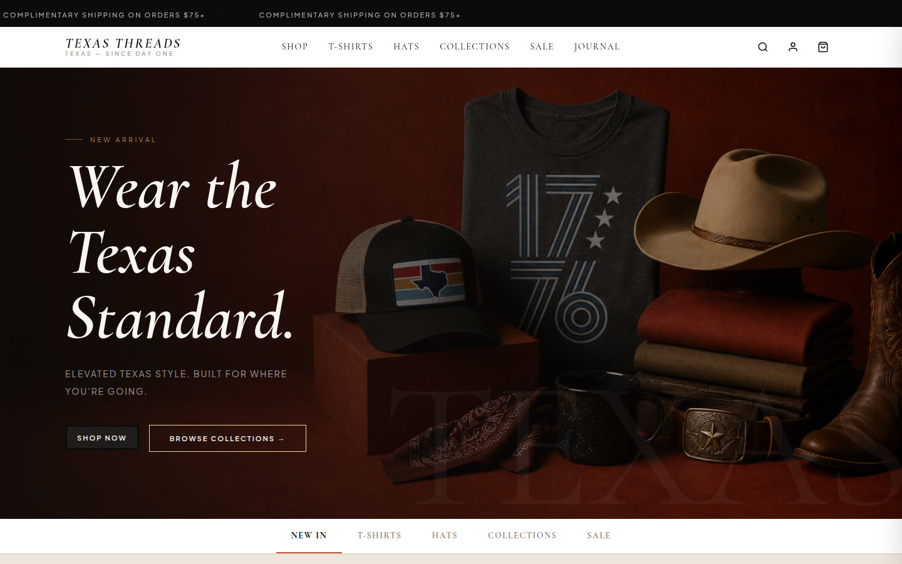
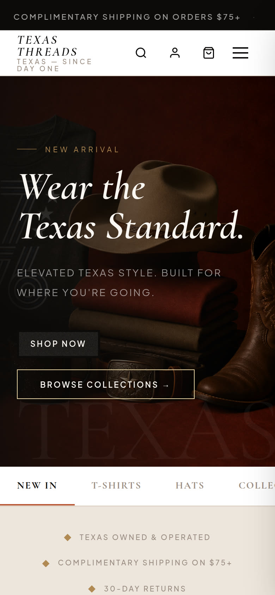

Selected Work / Case Study № 07
texas apparel · custom shop
Texas Threads · weartexasthreads.com
Wear the Texas Standard.
Elevated Texas style. Built for where you're going.

The Brief
We Don't Follow The Standard. We Set It.
Not fast fashion. Not a brand chasing trends. Texas Threads is built for Texans who know exactly who they are — in the city, at the ranch, at the table, or anywhere in between. Quality that endures. Style that means something.
Line on the live homepageTexas Owned & Operated. Complimentary Shipping on $75+. 30-Day Returns. Premium Quality Guaranteed.
02 — Identity
Tokens from the stylesheet
Swatches are the live [data-theme=texas] tokens. --font-display is Cormorant Garamond and --font-body is Plus Jakarta Sans.
Color
Primary
--color-primary#0d0b09
Accent
--color-accent#b85a36
Surface
--color-base-100#ffffff
Base 200
--color-base-200#f3ede3
Base 300
--color-base-300#e2d9cc
Warning
--color-warning#b08a52
Type
Aa Bb
ABCDEFGHIJKLMNOPQRSTUVWXYZ · abcdefghijklmnopqrstuvwxyz · 0123456789
Cormorant Garamond · --font-display
Aa Bb
ABCDEFGHIJKLMNOPQRSTUVWXYZ · abcdefghijklmnopqrstuvwxyz · 0123456789
Plus Jakarta Sans · --font-body
Logo
Logo pending — content needed
No logo file was found on the live site or a review prototype. A wordmark was not drawn for this page.

Screenshot pending — content needed
A second mobile screen was not in the prototype files or this repo. The Hive study shows two phones. This page has the one homepage capture stored for the work grid.
03 — Mobile
Homepage on a phone
The phone frame is the homepage screenshot stored with this work page. The stored desktop shot is the homepage hero only.
Results pending — content needed
No load time or before-and-after figure is in a project guide or scope file. Numbers that appear above are lines printed on the live homepage, not a measured outcome of this page.
04 — In Detail
Lines from the live homepage
Screenshot pending — content needed
Section crops were not in the source files. The three notes below are homepage lines, not separate screenshots.
Banner
Shipping line
Complimentary Shipping on Orders $75+.
Header
Texas — Since Day One
Texas — Since Day One.
Homepage row
Four labels under the hero
Texas Owned & Operated. Complimentary Shipping on $75+. 30-Day Returns. Premium Quality Guaranteed.
Quote pending — content needed
No named quote or testimonial was copied. Homepage review counts, where the site prints them, stay in the brief as the site's own line.
05 — The long scroll
Homepage viewport
The image is the homepage capture already in this repo. It is the top of the page, not a stitched full-page scroll.
Screenshot pending — content needed
A full-page scroll capture is not in the source files.